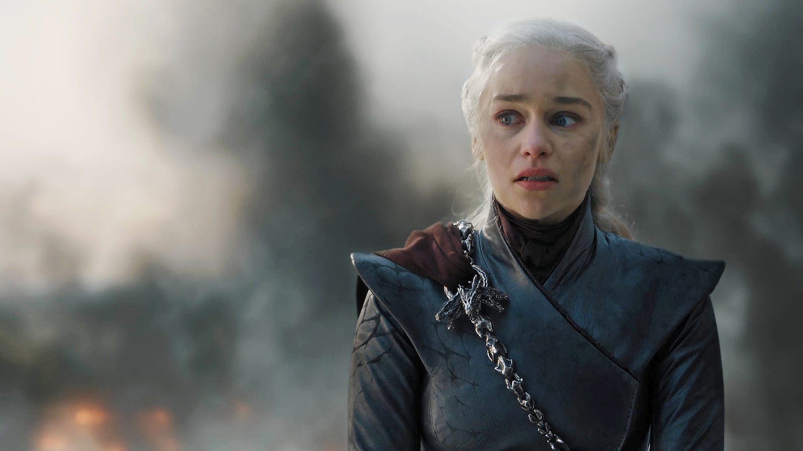

La reina Daenerys Targaryen, también llamada Daenerys de la Tormenta, La que no Arde, Rompedora de Cadenas, Madre de Dragones y, de manera más informal, Dany, es la hija menor del rey Aerys II Targaryen y su hermana esposa, la reina Rhaella.
Daenerys es descrita como una muchacha adolescente de aspecto valyrio clásico, con el cabello rubio plateado, los ojos de color púrpura y contextura delgada. Se dice que posee una cierta semejanza física a la reina Naerys Targaryen, aunque Daenerys es más alta.
Daenerys creció aterrorizada y abusada psicológicamente por su hermano Viserys. Sin embargo, eventualmente se convierte en una adolescente segura de sí misma y sus seguidores generalmente la aprecian y tratan con gran respeto y amor. Ser Jorah Mormont y Ser Barristan Selmy la han comparado con su hermano fallecido, el príncipe Rhaegar Targaryen, en términos de valentía, honorabilidad y nobleza.
Recordando a Daenerys Targaryen: La última domadora de dragonesNacida en 284 d.C. en Rocadragón, la princesa Daenerys fue hija póstuma del rey Aerys II Targaryen y su hermana esposa, la reina Rhaella Targaryen. Daenerys nació en en medio de una impresionante tormenta que azotó la isla de Rocadragón, lugar donde se habían refugiado su madre, quien murió en el parto, y su hermano Viserys. Por esta razón es en ocasiones llamada "Daenerys de la Tormenta."
Poco después, Ser Willem Darry de la Guardia Real llevó a los hermanos desde Rocadragón a Braavos, huyendo del entonces rey Robert I Baratheon. Tras la muerte de Ser Willem, Daenerys lloró su pérdida y la casa de la puerta roja, donde vivió hasta que tenía alrededor de cinco años, se convirtió en el símbolo de la niñez que nunca tuvo.
Los hermanos se consideraban los gobernantes legítimos de los Siete Reinos como el rey Viserys III y su heredera presunta, la Princesa de Rocadragón, Daenerys. En los años que siguieron, ella y Viserys vagaron por las nueve Ciudades Libres buscando apoyo, lo que le valió a Viserys el apodo de el Rey Mendigo.
Historia completa de Daenerys Targaryen